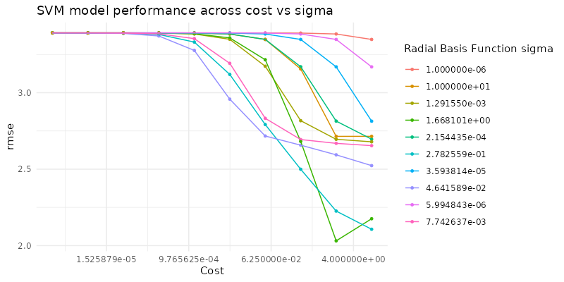

library(tidyverse)
library(tidymodels)
library(parsnip)
library(rsample)
library(yardstick)
library(ggplot2)
theme_set(theme_minimal())
student <- read_csv(file = "data/student-cleaned.csv")
student_split <- initial_split(data = student, prop = 0.75, strata = score)
student_train <- training(student_split)
student_test <- testing(student_split)
student_rec <- recipe(score ~ ., data = student) |>
step_impute_median(all_numeric_predictors()) |>
step_impute_mode(all_nominal_predictors()) |>
step_naomit(all_outcomes()) |>
step_dummy(all_nominal_predictors()) |>
step_zv(all_predictors()) |>
step_normalize(all_numeric_predictors())
null_spec <- null_model() |>
set_engine("parsnip") |>
set_mode("regression")
null_wf <- workflow() |>
add_recipe(student_rec) |>
add_model(null_spec)
null_fit <- null_wf |> fit(data = student_train)
null_preds <- null_fit |> predict(student_test) |> bind_cols(student_test)
null_metrics <- null_preds |> metrics(truth = score, estimate = .pred)
print(null_metrics)
plot <- ggplot(null_preds, aes(x = score, y = .pred)) +
geom_point(alpha = 0.5) +
labs(x = "Actual Score", y = "Predicted Score", title = "Null Model: Actual vs. Predicted Scores") +
theme_minimal()
print(plot)
ggsave("null_model_plot.png", plot, width = 6, height = 4, dpi = 300)High School Student Performance Estimation
Appendix to report - Other Machine Learning Models
Other Machine Learning Models
NULL Model
knitr::include_graphics("null_model_plot.png")
Random Forest Regression Model
#random forest model
library(tidyverse)
library(tidymodels)
library(parsnip)
library(rsample)
library(yardstick)
library(ggplot2)
library(tune)
library(usemodels)
theme_set(theme_minimal())
ctrl_grid <- control_grid(save_workflow = TRUE)
student <- read_csv(file = "data/student-cleaned.csv")
student_split <- initial_split(data = student, prop = 0.75, strata = score)
student_train <- training(student_split)
student_test <- testing(student_split)
student_folds <- vfold_cv(data = student_train, v = 10, strata = score)
student_rec <- recipe(score ~ ., data = student) |>
step_impute_median(all_numeric_predictors()) |>
step_impute_mode(all_nominal_predictors()) |>
step_naomit(all_outcomes()) |>
step_dummy(all_nominal_predictors()) |>
step_zv(all_predictors()) |>
step_normalize(all_numeric_predictors()) |>
step_pca(all_predictors(), num_comp = tune())
rf_spec <- rand_forest(trees = 1000, mtry = tune(), min_n = tune()) |>
set_mode("regression") |>
set_engine("ranger")
rf_wf <- workflow() |>
add_recipe(student_rec) |>
add_model(rf_spec)
rf_grid <- grid_regular(
mtry(range = c(1, 10)),
min_n(c(5, 10)),
num_comp(range = c(1, 10)),
levels = 5
)
rf_tune <- rf_wf |>
tune_grid(
resamples = student_folds,
grid = rf_grid,
control = ctrl_grid
)
rf_tune |> show_best()
rf_tune |> autoplot()
ggsave("random_forest_regression.png", width = 6, height = 4, dpi = 300)knitr::include_graphics("random_forest_regression.png")
SVM Model
library(tidymodels)
library(readr)
library(kernlab)
theme_set(theme_minimal())
ctrl_grid <- control_grid(save_workflow = TRUE)
student <- read_csv(file = "data/student-cleaned.csv")
student_split <- initial_split(data = student, prop = 0.75, strata = score)
student_train <- training(student_split)
student_test <- testing(student_split)
student_folds <- vfold_cv(data = student_train, v = 10, strata = score)
# Recipe remains the same
student_rec <- recipe(score ~ ., data = student) |>
step_impute_median(all_numeric_predictors()) |>
step_impute_mode(all_nominal_predictors()) |>
step_naomit(all_outcomes()) |>
step_dummy(all_nominal_predictors()) |>
step_zv(all_predictors()) |>
step_normalize(all_numeric_predictors())
num_comp <- 8
student_rec <- student_rec |>
step_pca(all_predictors(), num_comp = num_comp)
# SVM model specification
svm_spec <- svm_rbf(cost = tune(), rbf_sigma = tune()) |>
set_mode("regression") |>
set_engine("kernlab")
# Workflow with SVM
svm_wf <- workflow() |>
add_recipe(student_rec) |>
add_model(svm_spec)
# Define the tuning grid
svm_grid <- grid_regular(
cost(range = c(-6, 1), trans = log10_trans()),
rbf_sigma(range = c(-6, 1), trans = log10_trans()),
levels = 10
)
# Control settings for tuning
ctrl_grid <- control_grid(save_pred = TRUE)
# Tune the SVM model
svm_tune <- svm_wf |>
tune_grid(
resamples = student_folds,
grid = svm_grid,
control = ctrl_grid
)
# Show best tuning results
svm_tune |> show_best(metric = "rmse", n = 5)
# Plot the tuning results
autoplot(svm_tune, metric = "rmse") +
labs(
title = "SVM model performance across cost vs sigma"
)
ggsave("svm.png", width = 8, height = 4, dpi=100)knitr::include_graphics("svm.png")